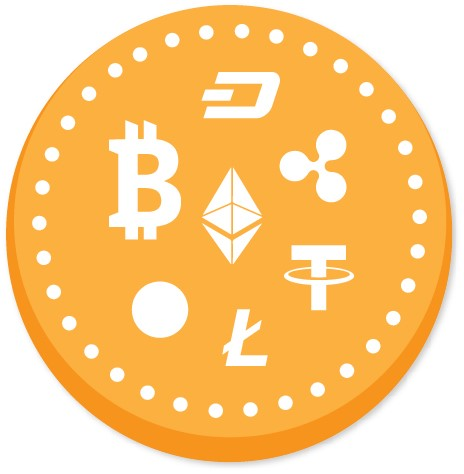

Hey friends! You should check in on some of those fields below
Cryptocurrency
A cryptocurrency is a digital or virtual currency that is secured by series of code (cryptography),
which makes it nearly impossible to counterfeit or double-spend. Many cryptocurrencies are decentralized networks based on
blockchain technology—a distributed ledger enforced by a disparate network of computers. A defining feature of cryptocurrencies
is that they are generally
not issued by any central authority, rendering them theoretically immune to government interference or manipulation.
Bitcoin, first released as open-source software in 2009, is the first decentralized cryptocurrency. bitcoin, was created in
2009 by presumably pseudonymous developer Satoshi Nakamoto. It used SHA-256, a cryptographic hash function, in its proof-of-work scheme.
How to define cryptocurrency?
As defined by Jan Lansky cryptocurrency is a system that satisfies six condition:
The system should be maintained by distributed consensus not by central governing authority like RBI.
The system have a ledger of its every unit and its ownership.
The system should define whether new cryptocurrency units can be created. Its should have a process to define circumstances for mining of new unit and how to determine the ownership of these new units.
Ownership of cryptocurrency units can be proved cryptographically .
The system allows transactions to be performed in which ownership of the cryptographic units is changed. A transaction statement can only be issued by an entity proving the current ownership of these units.
If two different instructions for changing the ownership of the same cryptographic units are simultaneously entered, the system performs at most one of them.
What are Altcoins?
Cryptocurrencies other than Bitcoin are called Altcoins or “alternative version of bitcoin”. Altcoin have underlying diffences with the Bitcoin.
Example Litecoin aims to process a block every 2.5 minutes, rather than bitcoin's 10 minutes which allows Litecoin to confirm transactions faster
than bitcoin.[25] Another example is Ethereum, which has smart contract functionality that allows decentralized applications to be run on its blockchain.
[26] Ethereum is the most-actively
used blockchain in the world according to Bloomberg News[27] and has the largest "following" of any altcoins according to the New York Times.
Top 10 Altcoin :-
Ethereum(ETH)
Litecoin(LTC)
Binance Coin(BNB)
Tezos(XTZ)
Monero(XMR)
Cardano(ADA)
Neon(NEO)
Tron(TRX)
Polkadot(DOT)
Chainlink(LINK)
What are application of cryptocurrency?
A blockchain account can provide functions other than making payments, for example in decentralized applications or smart contracts. In this case,
the units or coins are sometimes referred to as crypto tokens (or cryptotokens). Cryptocurrencies are generally generated by their own blockchain like Bitcoin and
Litecoin whereas tokens are usually issued within a smart contract running on top of a blockchain such as Ethereum.
What is under the hood?

Blockchain
Timestamping
Mining
Wallets
To Convert Fiat currency into Cryptocurreny we need exchange similar to stock exchanges like BSE or NSE.